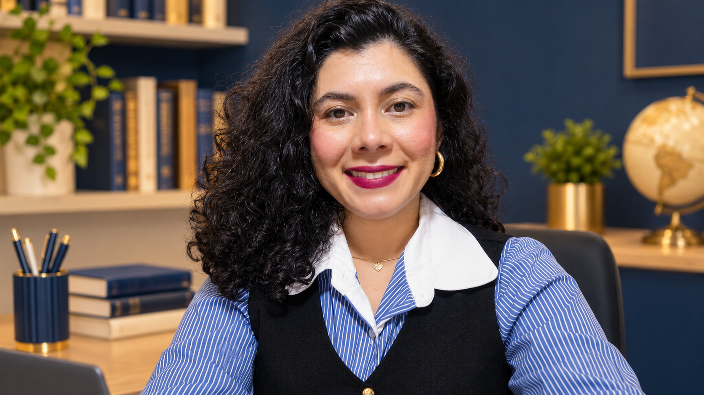
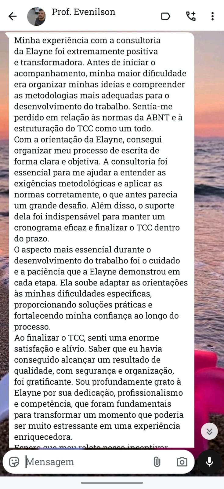
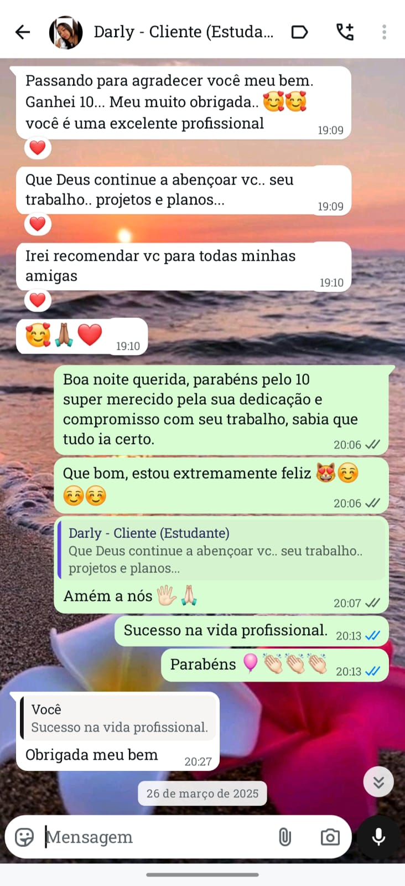
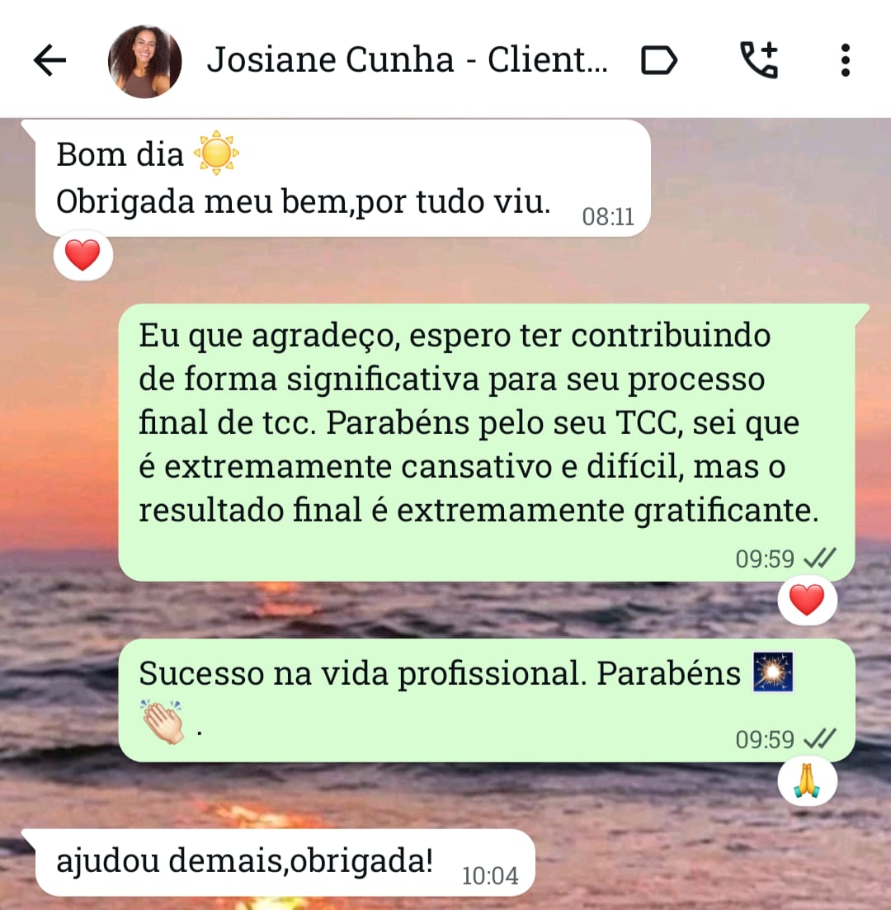
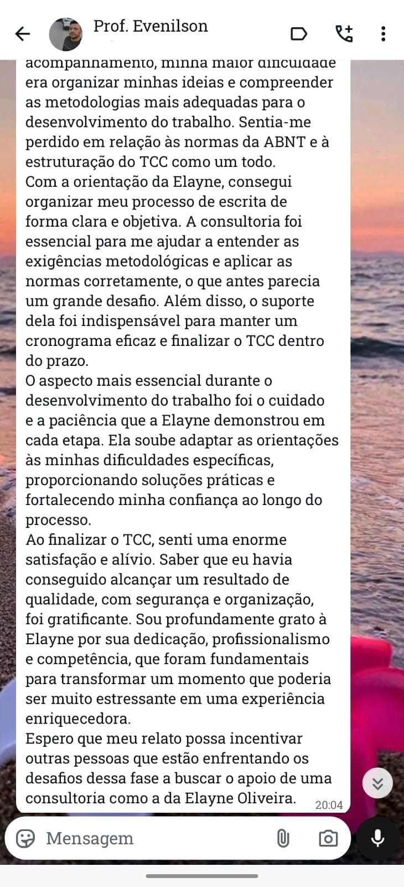
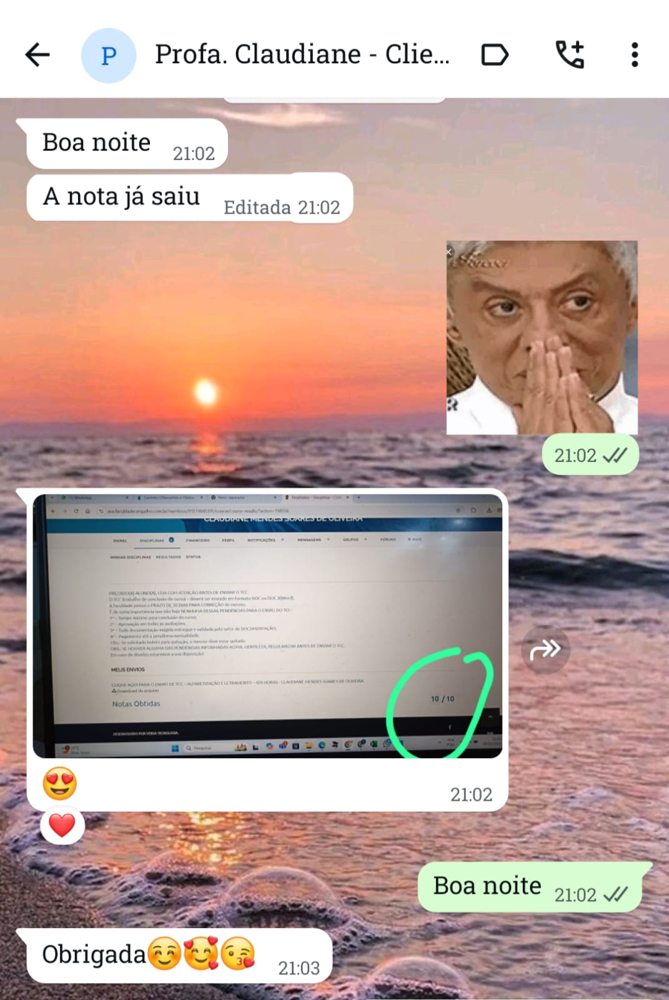
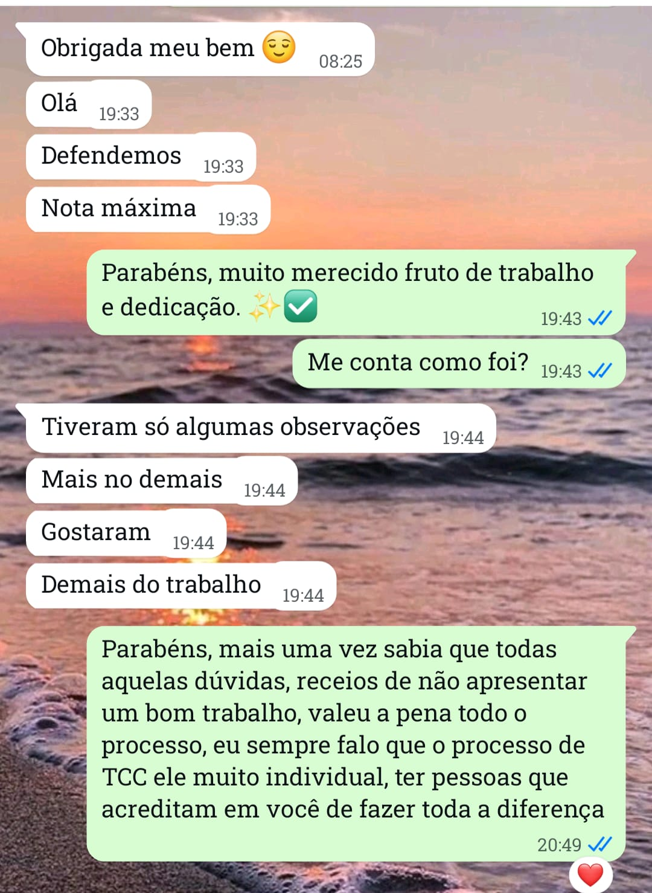
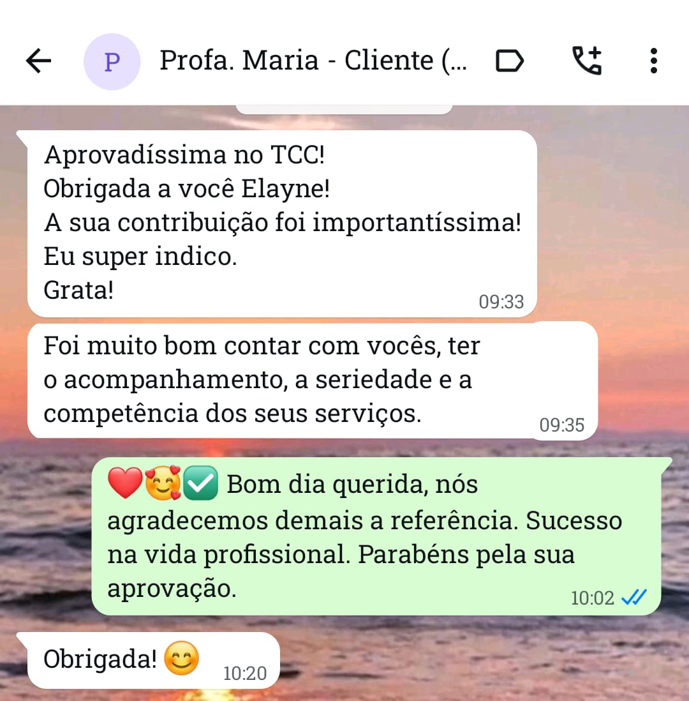
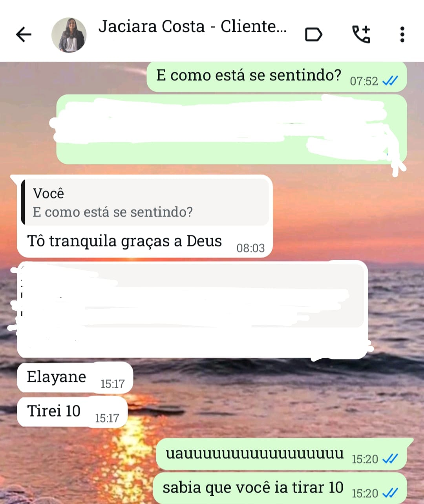
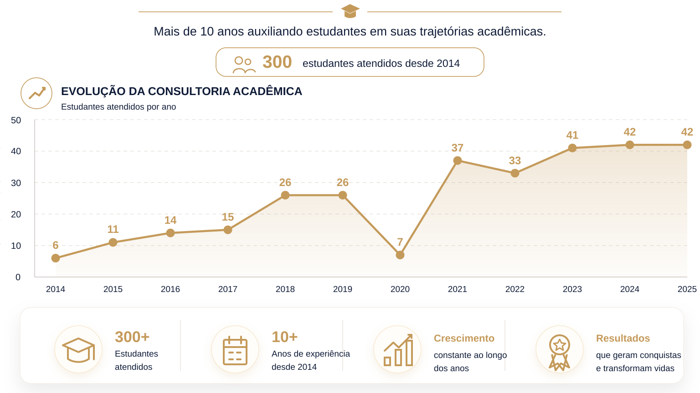

Entendimento da necessidade
No primeiro contato, entendemos seu curso, etapa, tipo de trabalho, objetivo, prazo e principais dificuldades para indicar caminhos de apoio.
Apoio acadêmico especializado em pesquisa, metodologia científica, revisão textual e normalização, com clareza, responsabilidade e compromisso com a sua pesquisa.
A EO Consultoria Acadêmica oferece orientação e apoio acadêmico a estudantes de graduação e pós-graduação, pesquisadores(as) e professores(as), com método, clareza e responsabilidade.
Apoio em pesquisa, escrita, revisão, ABNT e apresentação. O formato do acompanhamento considera a etapa, o objetivo e o prazo de cada trabalho.
Escolha uma categoria para ver os serviços incluídos.

No primeiro contato, entendemos seu curso, etapa, tipo de trabalho, objetivo, prazo e principais dificuldades para indicar caminhos de apoio.
Com essas informações, alinhamos quais orientações, revisões ou encontros podem contribuir para a sua etapa.
Você recebe orientação sobre estrutura, método, linguagem acadêmica e apresentação, mantendo a autoria e as decisões acadêmicas do seu trabalho.
O acompanhamento considera coerência, estrutura, organização textual e método para ajudar você a avançar com mais clareza.
A orientação considera seu ponto de partida, seus objetivos e as dificuldades que aparecem em cada etapa.
O apoio respeita o processo de aprendizagem e a autoria do estudante, com responsabilidade acadêmica em todas as etapas.
Relatos de estudantes e profissionais que compartilharam como foi o acompanhamento acadêmico.

“Com a orientação da Elayne, consegui organizar meu processo de escrita de forma clara e objetiva.”Prof. Evenilson

“Ganhei 10! Você é uma excelente profissional.”Darly, estudante

“Ajudou demais, obrigada!”Josiane Cunha





“São mais do que resultados. São reflexos da diferença que, como consultora, busco fazer na trajetória acadêmica de cada estudante. Mais do que pensar apenas na conclusão do trabalho, acredito na importância de aprender, evoluir e crescer durante todo o processo de escrita. Afinal, cada etapa acadêmica representa uma fase única da vida, marcada por desafios, emoções, descobertas e conquistas que fazem parte da construção pessoal e profissional de cada aluno.”

“A EO Consultoria Acadêmica, ao longo desses anos, construiu muito mais do que resultados: construiu histórias, memórias e conquistas acadêmicas ao lado de estudantes que confiaram no meu trabalho. É emocionante fazer parte da trajetória e do crescimento de cada aluno.”
Estudantes de graduação e pós-graduação, professores e pesquisadores que precisam de orientação, revisão ou apoio metodológico.
Sim. O atendimento pode ser realizado por mensagens ou, quando necessário, em reuniões on-line, inclusive pelo Google Meet.
O apoio pode envolver orientação metodológica, revisão, normalização ABNT, organização de apresentações e outros serviços listados nesta página. A autoria e as decisões acadêmicas permanecem com o estudante.
Envie seu curso, o tipo e a etapa do trabalho, além do prazo desejado. Com essas informações, a consultoria pode orientar sobre o formato de atendimento, prazos possíveis, disponibilidade e valores.
Para iniciar a conversa, envie seu curso, o tipo e a etapa do trabalho e o prazo que você tem em mente. Assim fica mais fácil entender sua necessidade e orientar os próximos passos.